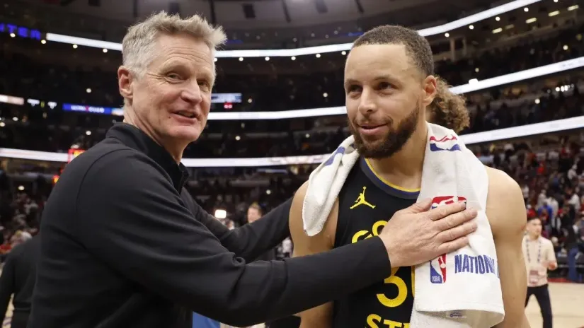

Roboti na treningu Voriorsa
Šta nas to čeka u budućnosti?
Roboti su preuzeli svet. Okej, nisu još, ali su veoma blizu. Već sada nam je skoro sve digitalizovano, a pojavom napredne veštačke inteligencije ljudi su počeli da strahuju za svoje poslove, a i generalno brinu o tome kako će njihovi životi izgledati jednog dana.
Pojava interneta i uopšteno tehnologije donela je mnogo toga dobrog kako u svetu, tako i u košarci. Realno vam ne treba više od deset klikova na pametnom telefonu da dođete do hajlajtsa utakmice koju ste propustili.
Silicijumska dolina je središte najsavremenije industrije i nalazi se u San Hozeu, koji je povezan sa San Franciskom, u kome se ove godine održava NBA Ol-star vikend, kao i pre tačno 25 godina.
Tada je održan prvi tehnološki skup, na kome su govornici bili Mark Kjuban (sada manjinski vlasnik Dalas Meveriksa) i kao i Džo Lejkob (suvlasnik Golden Stejt Vorirosa).
Na proslavi 25-godišnjice tehnološkog skupa, komesar NBA lige, Adam Silver, na sceni se našao zajedno sa robotima. Ove mašine imaju potencijal da promene način na koji treneri i igrači pristupaju utakmici.